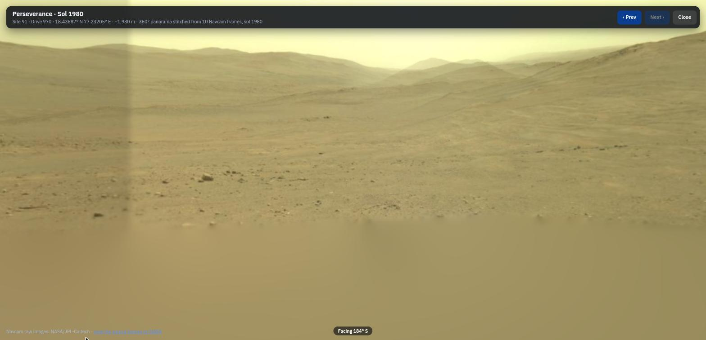
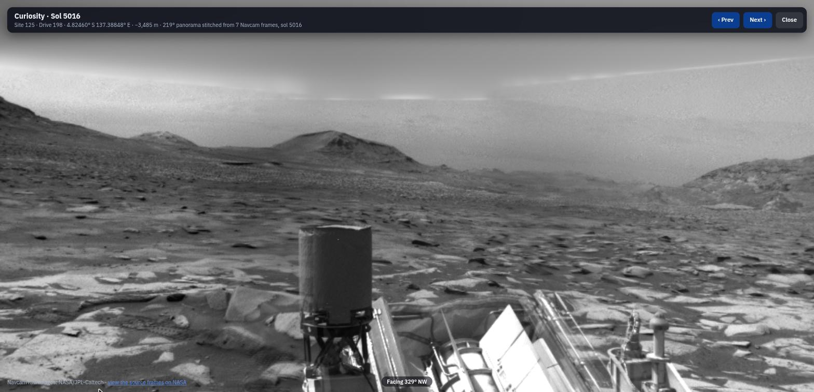

A Google-Maps-style atlas of Mars for the first human explorers. It has a 3D globe, rover Street View, live weather, walkable terrain and a Marswalk planner that keeps astronauts off dangerous slopes. Everything is built from open NASA, USGS and IAU data.
Every layer, stop and number comes from a published NASA, USGS or IAU dataset, with the source cited in the repository.
Spin and zoom around all of Mars on real topography, with high-resolution terrain where the rovers are.
Stand where Perseverance or Curiosity stopped and look around in 360°.
Click a start and science stops; each leg is the fastest route that never crosses ground steeper than 15°.
Drop onto the terrain at true scale and walk it like a video game.
Today's conditions from the rovers' own weather stations.
Play both rovers' journeys sol by sol, and visit every Perseverance sample core.
Right-click anywhere on Mars for a one-page briefing for settlers.
The time and place, measured the Mars way.
NASA publishes rover photos one frame at a time. Martian Map turns each stop's frames into a single sphere you can look around.

Perseverance, sol 1980, Jezero Crater: 10 Navcam frames stitched into a 360° view, facing south.

Curiosity, sol 5016, Gale Crater: 7 frames stitched into a 219° view, with the rover's own deck in front.
Positions use the IAU Mars 2000 sphere (radius 3,396,190 m). Every derived file is rebuilt from source by one command.
| Dataset | Mission / instrument | Used for |
|---|---|---|
| Global topography | Mars Global Surveyor · MOLA MEGDR | Globe terrain, elevation readout, colour relief, roughness |
| Jezero elevation | MRO · CTX DEM, 20 m (USGS) | Terrain, slope hazards, route planning |
| Gale elevation | MRO · HiRISE-derived MSL DEM mosaic, read at 32 m (USGS) | Terrain, slope hazards, route planning |
| Surface imagery | MRO HiRISE 25 cm · CTX · Viking MDIM (NASA Trek) | Photo-real ground at every zoom |
| Rover positions | JPL MMGIS traverses and waypoints | Tracks, Street View stops, mission replay |
| Rover photos | Perseverance and Curiosity Navcam raw images | Street View panoramas |
| Weather | Curiosity REMS · Perseverance MEDA | Weather panels and Mars-year charts |
| Buried ice | SWIM 2.0 (Subsurface Water Ice Mapping) | Settlement site reports |
| Radiation | Curiosity · RAD (Hassler et al. 2014) | Surface dose in site reports |
| Dust | Mars Global Surveyor · TES dust index | Dust-cover layer |
| Place names | IAU / USGS Gazetteer of Planetary Nomenclature | 2,052 searchable features |
| Human Exploration Zones | NASA 2015 First Landing Sites workshop | 30 candidate zones on the globe |
| Rock samples | NASA Mars Rock Samples page | 30 sample cards at their sealing sites |
| Rover model | NASA 3D Resources · Perseverance glTF | 3D rover in mission replay |